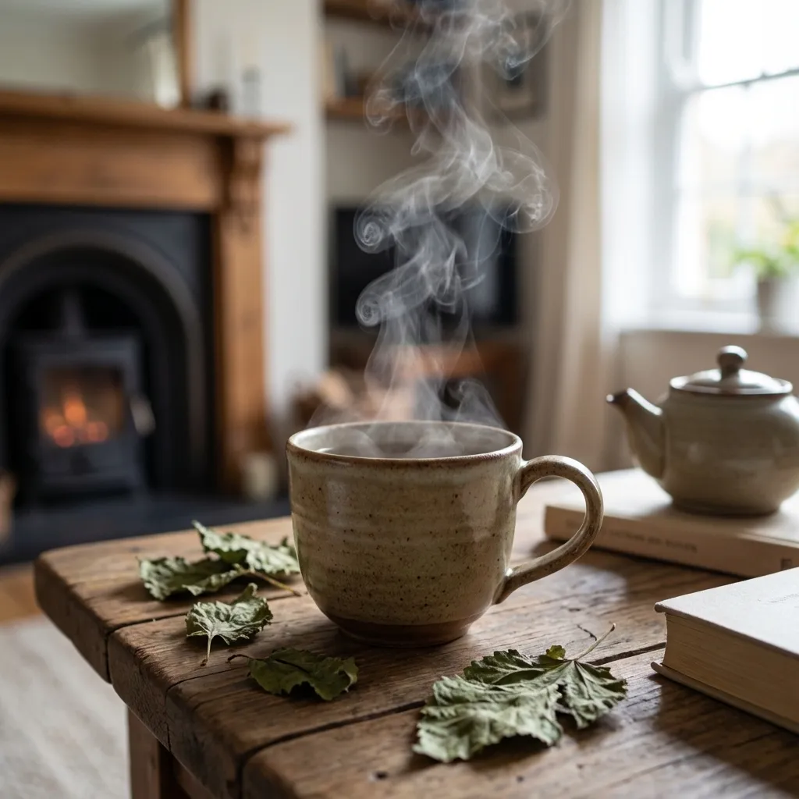
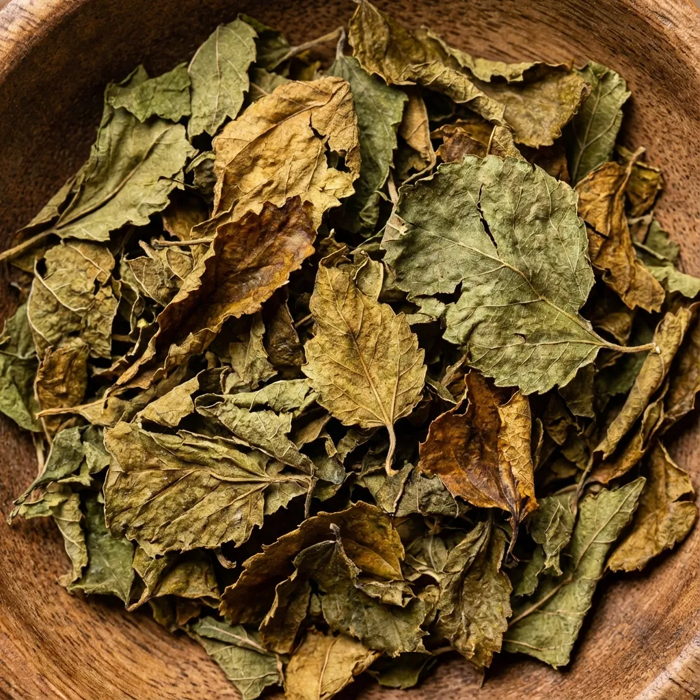

Hoja de Morera: Superalimento para el Control Glucémico
El té de hoja de morera es una infusión milenaria utilizada en la medicina tradicional china y japonesa por sus extraordinarias propiedades para el control glucémico natural. Esta bebida funcional, elaborada con hojas de Morus alba, contiene el alcaloide DNJ (1-desoxinojirimicina) que ralentiza la absorción de carbohidratos, convirtiéndola en un aliado perfecto para quienes buscan regular el azúcar en sangre de manera natural y deliciosa.

📊 Datos Generales
⏱️ Tiempo de Preparación: 15 minutos
🔥 Cocción: 15 minutos (infusión)
⏰ Total: 30 minutos
🍽️ Porciones: 4 personas (4 tazas)
📈 Calorías: 220 kcal por porción | Proteína 15g | Carbohidratos 18g | Grasas saludables 10g
🍃 Ingredientes
- 4 cucharadas de hojas de morera secas (20g)
- 1 litro de agua filtrada
- 1 rama de canela (opcional, para sabor)
- Ralladura de 1 limón orgánico (opcional)
- 1-2 cucharaditas de miel cruda o stevia (opcional, para endulzar)
- 4 rodajas finas de jengibre fresco (opcional, potencia efectos)

👨🍳 Preparación Paso a Paso
- Preparar los ingredientes: Enjuaga las hojas de morera secas bajo agua fría para eliminar cualquier impureza. Si usas especias adicionales (canela, jengibre), tenlas listas.
- Hervir el agua: En una olla mediana, calienta 1 litro de agua filtrada hasta que comience a hervir. Una vez alcanzado el punto de ebullición, reduce el fuego a medio-bajo.
- Añadir las hojas: Agrega las 4 cucharadas de hojas de morera secas al agua caliente. Si usas canela o jengibre, incorpóralos en este momento.
- Infusionar: Deja que las hojas se infusionen durante 10-15 minutos a fuego bajo. NO dejes hervir vigorosamente, ya que las altas temperaturas pueden degradar algunos compuestos beneficiosos como el DNJ.
- Colar: Retira del fuego y cuela el té con un colador fino o filtro de tela para separar las hojas. Presiona suavemente las hojas para extraer todos los compuestos activos.
- Aromatizar (opcional): Añade ralladura de limón para un toque cítrico fresco que complementa el sabor terroso del té. Si deseas endulzar, usa miel cruda (cuando el té esté tibio, no hirviendo) o stevia.
- Servir: Sirve el té caliente en tazas. Lo ideal es consumirlo 15-30 minutos ANTES de las comidas principales, especialmente aquellas ricas en carbohidratos (pasta, arroz, pan, postres).
- Conservar: Si preparaste más cantidad, guarda el té en el refrigerador en un recipiente de vidrio hermético hasta por 3 días. Puedes recalentarlo o beberlo frío.

💪 Información Nutricional Destacada
La hoja de morera es un superalimento metabólico con beneficios científicamente comprobados:
- DNJ (1-desoxinojirimicina): Alcaloide único que inhibe la enzima alfa-glucosidasa, ralentizando la conversión de carbohidratos complejos en azúcares simples. Reduce picos de glucosa post-prandial hasta un 44% según estudios
- Antioxidantes potentes: Rico en quercetina, ácido clorogénico y rutina que combaten el estrés oxidativo y protegen células del daño de radicales libres
- Flavonoides: Compuestos antiinflamatorios que mejoran la salud cardiovascular y reducen la presión arterial sistólica en un promedio de 8-10 mmHg
- Minerales esenciales: Aporta calcio, hierro, zinc, magnesio y potasio para función celular óptima y equilibrio electrolítico
- Vitaminas del complejo B: Especialmente B1, B2 y B3 que apoyan el metabolismo energético y la función nerviosa
- Fibra soluble: Mejora la saciedad, ralentiza la digestión y apoya la salud intestinal alimentando bacterias beneficiosas
- Efecto hepatoprotector: Protege el hígado del daño oxidativo y apoya sus funciones de desintoxicación natural
- Propiedades neuroprotectoras: Los antioxidantes cruzan la barrera hematoencefálica, protegiendo el cerebro del envejecimiento cognitivo
✨ Tips y Variaciones
- Momento óptimo de consumo: Bebe 1 taza 20-30 minutos ANTES de comidas con carbohidratos (desayuno con pan, almuerzo con pasta, cena con arroz) para maximizar el efecto sobre la absorción de azúcares
- Versión helada refrescante: Prepara una jarra grande, refrigera y sirve con hielo, menta fresca y rodajas de pepino para una bebida detox perfecta para verano
- Combo anti-glucémico: Combina con gominolas de vinagre de manzana antes de comidas ricas en carbohidratos para un efecto sinérgico potenciado
- Boost de canela: Añade 1 rama de canela Ceylon durante la infusión. La canela contiene cinamaldehído que también mejora la sensibilidad a la insulina
- Versión chai de morera: Infusiona con cardamomo, clavo, anís estrellado y jengibre para un té especiado estilo chai con beneficios amplificados
- Reutiliza las hojas: Las hojas de morera pueden re-infusionarse 2-3 veces. La segunda infusión será más suave pero mantiene compuestos beneficiosos
- Para diabéticos: Si tomas medicamentos para diabetes (metformina, insulina), monitorea tu glucosa cuidadosamente y consulta con tu médico, ya que el té puede potenciar los efectos hipoglucémicos
- Dosis diaria recomendada: 2-3 tazas al día (antes de comidas principales). No excedas 6g de hojas secas diarias sin supervisión médica
- Sinergia con ejercicio: Bebe 30 minutos antes del entrenamiento para mejorar la utilización de grasas como energía. Hidrata después con bebidas electrolíticas
- Almacenamiento de hojas: Guarda las hojas secas en un recipiente hermético oscuro, alejado de luz y humedad. Duran hasta 12 meses manteniendo propiedades
Este té de hoja de morera es una herramienta poderosa para el control natural del azúcar en sangre, ideal para prediabéticos, diabéticos tipo 2 bajo supervisión médica, y cualquier persona que busque optimizar su salud metabólica. Combínalo con una dieta baja en carbohidratos refinados y ejercicio regular para resultados óptimos.
💚 Encuentra Hoja de Morera Orgánica en Amazon
Descubre hojas de morera secas de alta calidad, orgánicas y sin aditivos para preparar tu té medicinal en casa.
Ver Productos en Amazon →